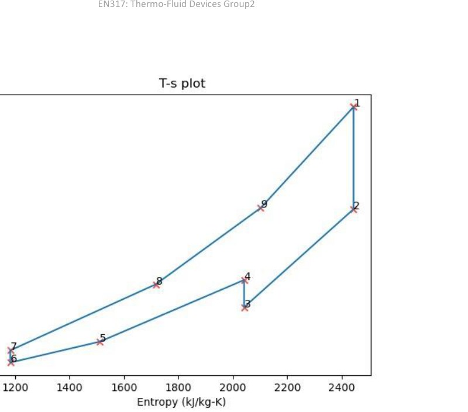
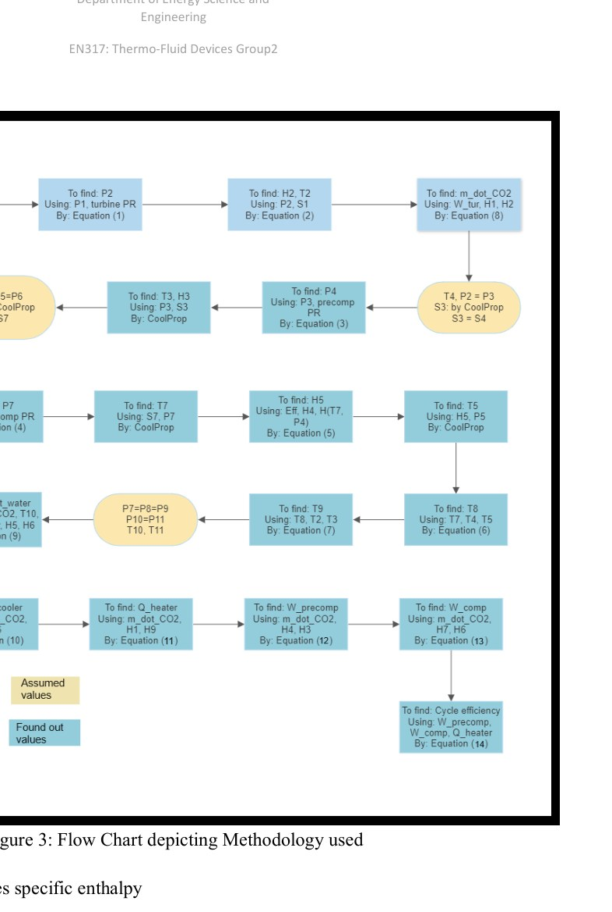

Overview
This project modelled a supercritical-CO₂ Brayton cycle with precompression and two-stage recuperation for approximately 150 MW net output. Python and CoolProp were used for state-point properties and iterative cycle calculations.
Cycle modelling
The turbine rating was increased iteratively until turbine work minus main- and pre-compressor parasitic work met the net plant target. The model then computes recuperator duties, cooler rejection and heater input.

Low-temperature recuperator
The LTR was separately sized as a micro-channel heat exchanger using enthalpy balances, LMTD and an overall heat-transfer coefficient.

Techno-economic model
Scaling correlations were applied to turbomachinery and heat exchangers, giving a reported total component-level capital estimate of roughly $76.9 million. Recuperators account for a large share of that estimate.
The study uses idealizations including simplified pressure-loss treatment and mean properties for component sizing. Results are design-study estimates, not a detailed plant EPC cost model.
Source material
The project narrative above is condensed from the submitted coursework/thesis and keeps design estimates, simulation results and demonstrated hardware distinct.